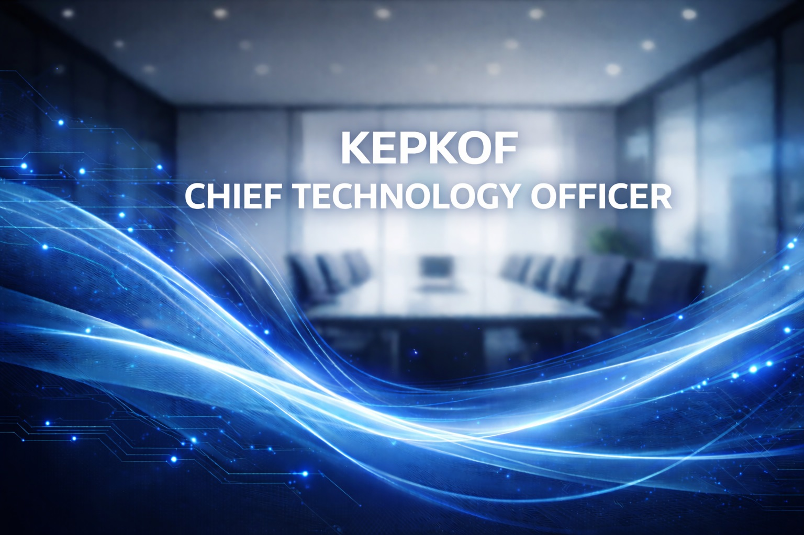

Strategic focus
Simplifies architecture so teams can ship fast without sacrificing quality, leaning on observability and continuous delivery.
- API-first architecture
- Observability automation
- Platform enablement
Product Vision
Chief Technology Officer
Builds the platforms that power every KEPKOF experience, focusing on developer speed, reliability, and elegant product engineering.

Simplifies architecture so teams can ship fast without sacrificing quality, leaning on observability and continuous delivery.
Delivered a resilient retail platform with daily deployments, reducing rollout time by 45% and lifting reliability.
Invests in mentorship, lean documentation, and pairing to keep engineers growing while ensuring every service has a clear product manager partner.
Started as a full-stack engineer on consumer platforms.
Led the platform chapter responsible for scalability and reliability.
Promoted to CTO to oversee product and platform engineering.
Keeps the engineering backlog tied to measurable business value while investing in skills that improve performance and innovation.